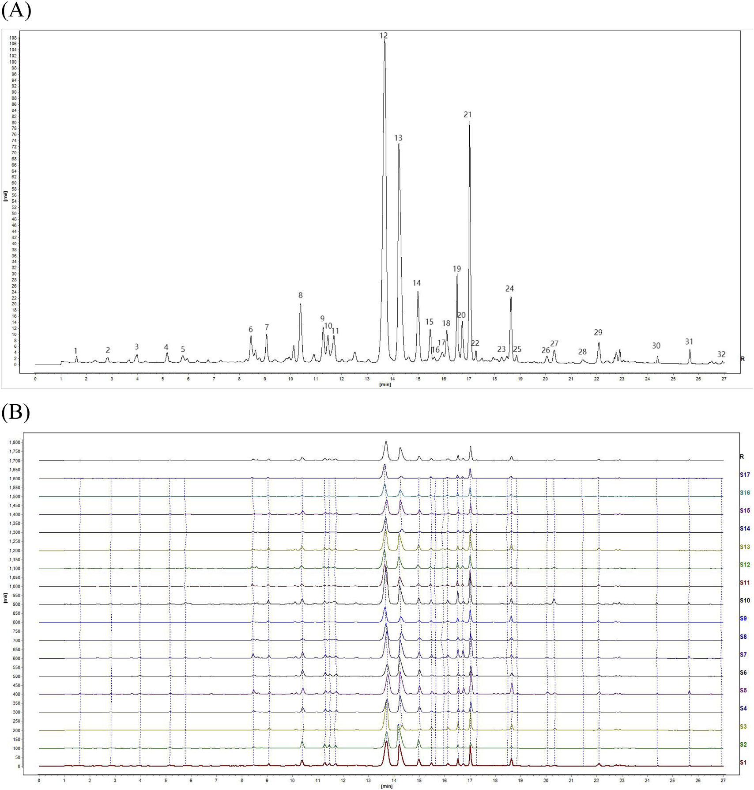
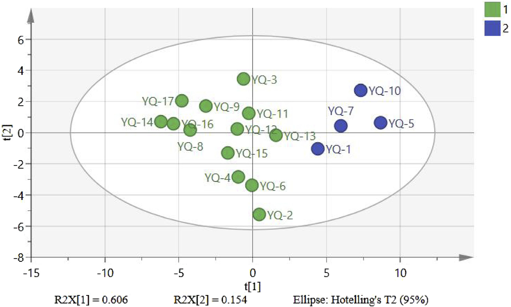

医清顆粒(YiQing granules)の品質評価のためのUPLC指紋分析と単一マーカーによる多成分定量分析(QAMS)の統合

<!-- 方針: ほぼ全訳＋必要に応じた補足。原文構成（Introduction→Materials and methods→Results and discussion→Conclusion）に沿って訳出。「> 補足:」は訳者注。 -->
書誌情報
- 標題（原題）: UPLC fingerprinting combined with quantitative analysis of multicomponents by a single marker for quality evaluation of YiQing granules
- 著者: YangHong Li（第一著者、筆頭共著）, Bao Yu（筆頭共著）, Wei Zhao, Xiyu Pu, Xue Zhong, Xingbao Tao, Yunhong Wang, Weiguo Cao（責任著者）, Dan Zhang（責任著者）
- 所属: 重慶医科大学 中医薬学院（College of Traditional Chinese Medicine, Chongqing Medical University）／重慶中医薬大学 中薬学院（College of Chinese Materia Medica, Chongqing University of Chinese Medicine）／重慶市中薬研究院（Chongqing Institute of Pharmaceutical Plant）／雲南中医薬大学（Yunnan University of Traditional Chinese Medicine）
- 掲載誌・巻号: Frontiers in Chemistry, 2025, 13:1632033
- DOI: 10.3389/fchem.2025.1632033
- インパクトファクター: 要確認（Frontiers in Chemistry。ウェブ検索では集計サイトにより3.6〜4.2程度の値が示され一致しなかったため、Clarivate JCR原典を直接確認できず断定を避けた）
- 受理経過: 受領 2025-05-20／採録 2025-07-17／公開 2025-07-28
- ライセンス: Creative Commons Attribution License (CC BY 4.0)（オープンアクセス）
- 助成: 重慶市衛生健康委員会「巴渝岐黄学者」支援プロジェクト(2023-23-14)、重慶市教育委員会科学技術研究プログラム(KJZD-M202215102、KJQN202215118)、重慶市科学技術局「重慶市人材計画一括プロジェクト」(cstc2024ycjh-bgzxm0111)、重慶市中薬研究院基礎研究特別基金(2023jbky-002)
補足: YQGs = YiQing granules（医清顆粒）。中国薬局方(2020年版)収載の基本医薬品で、黄連(Coptis chinensis)・大黄(rhubarb)・黄芩(Scutellaria baicalensis)の3生薬からなる。QAMS = Quantitative Analysis of Multi-components by a Single Marker（単一マーカーによる多成分定量分析）。RCF = Relative Correction Factor（相対補正係数）。
要旨（Abstract）
研究背景: 医清顆粒(YQGs)は、中国の臨床で一般的に用いられる特許医薬品(patented drug)である。しかし本製剤の品質管理指標は比較的限られており、製品の品質を効果的に担保できていない。したがって、YQGsの包括的な品質評価が欠如している。
目的: 本研究の目的は、超高性能液体クロマトグラフィー-フォトダイオードアレイ検出器(UPLC-PAD)による指紋分析と、単一マーカーによる多成分定量分析(QAMS)を組み合わせた、YQGsの定量的・定性的分析法を確立することであった。
方法: UPLC指紋とQAMS・化学量論的手法(stoichiometric method)を組み合わせた包括的評価法を確立・検証し、異なるメーカーが製造するYQGsの全体的品質を評価した。ベルベリンを内部標準として選択し、コプチシン、エピベルベリン、バイカリン、ベルベリン、パルマチン、ウォゴノシド、バイカレイン、ウォゴニン、アロエエモジン、レイン、エモジン、クリソファノールの相対補正係数を確立した。
研究結果: UPLC-PAD法を用いることで指紋の実験時間が約0.5時間に大幅に短縮された。類似度0.9超の共通ピークが合計32個同定された。QAMSの精度を外部標準法と比較したところ、両法の間に有意差はなかった。
結論: 本研究で確立したUPLC指紋とQAMSを組み合わせた方法は実行可能かつ信頼できるものであり、YQGsの包括的な品質評価に用いることができ、他の漢方薬製剤の品質評価の参考を提供しうる。
キーワード: 「医清」顆粒("YiQing" granule)；単一マーカーによる多成分定量分析(QAMS)；UPLC；指紋(fingerprint)；定量分析；品質管理
1. 序論（Introduction）
医清顆粒(YQGs)は、中国薬局方(2020年版)に収載されている一般的に用いられる基本医薬品(essential medicine)であり、黄連(Coptis chinensis)・大黄(rhubarb)・黄芩(Scutellaria baicalensis)から構成される(Commission, 2020)。現代の研究によれば、黄連の主要な活性成分はコプチシン、エピベルベリン、パルマチン、塩酸ベルベリンなどのアルカロイドである(Wang et al., 2019; Yang et al., 2021)。黄芩の主要な活性成分は、バイカリン、ウォゴノシド、バイカレイン、ウォゴニンなどのフラボノイドである(Wang et al., 2018; Li et al., 2015; Feng et al., 2010)。大黄の主要な活性成分は、アロエエモジン、レイン、エモジン、クリソファノールなどのアントラキノン類である(Zhang et al., 2023; Zhang et al., 2021)。YQGsの清熱・解毒・涼血・活血作用(heat-clearing, detoxifying, blood-cooling and blood-activating effects)により(Zheng et al., 2012; Liu et al., 2024)、大黄は臨床的に咽頭痛、咽頭炎、扁桃炎、便秘、歯肉炎、咽頭炎、喀血の治療に用いられてきた(Gong et al., 2017)。純度の高い化学薬品とは異なり、伝統中薬製剤は通常、組成の複雑性を伴う多成分の相乗効果を持つ。したがって、より包括的な品質管理・評価法が必要とされる。今日、指紋技術は漢方薬とその製剤の品質管理に広く用いられている。漢方薬の指紋は、漢方薬の化学成分の体系的研究に基づく、定量可能かつ包括的な定性同定法である(Wang et al., 2020; Gao et al., 2020)。これにより、漢方薬中の複雑な成分をより包括的に分析し、漢方薬の全体的な品質を管理できる(Yang et al., 2023; Wu et al., 2021; Liu et al., 2022)。この手法は世界保健機関(WHO)、米国食品医薬品局(FDA)、欧州医薬品庁(EMA)、中国国家食品薬品監督管理局によって承認されている(Cuadros-Rodríguez et al., 2016; Zhang et al., 2024)。しかし、漢方薬またはその製剤の品質評価には一定の限界があり、特徴的な共通ピークが漢方薬とその製剤の品質を代表する情報を反映しない場合がある(Han et al., 2022; Li et al., 2021)。近年、化学量論分析法(stoichiometry analysis method)がクロマトグラフィー指紋分析に広く用いられており、類似度解析(SA)、階層クラスター分析(HCA)、主成分分析(PCA)、直交部分最小二乗判別分析(OPLS-DA)などがある(Sun et al., 2019; Zhu et al., 2019; Si et al., 2020; Men et al., 2021)。指紋データの統計解析は、指紋が漢方薬の品質を代表する組成情報を提供できないという問題を効果的に解決しうる(Fan et al., 2022)。
中国薬局方(2020年版)において、医清顆粒の品質管理の指標成分は黄芩中のバイカリンのみであり、大黄と黄連に対応する含量測定法は開発されていない(Chen et al., 2011)。漢方薬とその成分の複雑性により、単一成分または単一指標での品質評価は困難である。研究者らはこれまでにHPLCおよびUPLC-MS/MSを用いて他のYQGsの品質を評価してきた。しかし、大半の研究には3つの主要な限界がある。(1) 単一指標成分分析への依存であり、漢方薬の全体的品質を包括的に反映することが困難である。(2) 対照品(control products)への依存であり、試験コストが高くなる。(3) 多次元データ統合能力の欠如であり、品質マーカー間の関連パターンを十分に活用できない(Chen et al., 2011; Qu et al., 2007; Li et al., 2010; Zou et al., 2023)。大半の研究では、多成分定量分析は主に外部標準法(external standard method; ESM)により行われてきた。しかし、一部の標準品は入手困難かつ高価であった。対照的に、単一マーカーによる多成分定量分析(QAMS)は、安価かつ入手しやすい標準品を用いて複数成分の定量検出を実現できる。QAMS(Zou et al., 2023; Wang et al., 2023; Xu et al., 2024; Zhang et al., 2022)は複数成分の定量分析のために漢方薬(TCM)の品質管理に広く用いられており、この手法は入手困難または高価な標準品の問題を解決するだけでなく、試験コストと時間を大幅に削減する。現在、QAMSはさまざまな漢方生薬とその製剤にうまく適用されており、例えば鷹茶(eagle tea)の活性成分の定量(Luo et al., 2023)、茶製品(Stekolshchikova et al., 2018)、左金丸(Zuojin pill)(Wang et al., 2023)などがある。
本研究では、3つの主要技術を革新的に統合した。(a) UPLCを用い、勾配溶出手順を最適化することで12成分の同時分離を達成し、従来のHPLCの分析時間を短縮した。(b) QAMSによる多指標定量法を確立し、相対補正係数によって入手困難な対照品の代替検出を実現し、コストを削減した。(c) ケモメトリクス解析(PCA、OPLS-DAなど)を導入し、処方中の3対の成分の相乗効果パターンを明らかにした。YQGsの品質の包括的かつ科学的な評価は、製造業者と薬事規制当局にYQGsの品質一貫性管理のための科学的根拠と参考を提供するだけでなく、当該医薬品の品質の包括的評価のための簡便・迅速・正確・信頼できる試験法を提供する。
2. 材料と方法（Materials and Methods）
2.1 機器
定量UPLC分析は、Waters 2998 PDA検出器を備えたWaters e2695超高性能液体クロマトグラフ、およびAgilent 1290 Infinity II液体クロマトグラフを用いて行った。クロマトグラフィーカラムは、Phenomenex Kinetex C18カラム(2.1 mm×50 mm、1.7 μm)、Waters ACQUITY UPLC BEH C18カラム(2.1 mm×50 mm、1.7 μm)、Nuovasil SAB C18カラム(2.1 mm×50 mm、1.8 μm)を用いた。電子天秤はMettler Toledo社製を使用した。超音波装置は寧波新芝生物科技(Ningbo Xinzhi Biotechnology Co., Ltd.)製のSB-5200DTを使用した。超純水製造装置(Sartorius、ドイツ)を定量分析に使用した。
2.2 材料と試薬
エモジン(ロット番号MUST-23112011、純度98.09%)、クリソファン酸(ロット番号MUST-23110720、純度99.46%)、レイン(ロット番号MUST-23111012、純度99.1%)の標準品は、成都Manster Biotechnology Co., Ltd.(中国・四川省)より購入した。フィスシオン(physcion、ロット番号B20242、純度≥98%)、ラバルベロン(rhabarberone、ロット番号B20772、純度≥98%)、バイカリン(ロット番号B20570、純度≥98%)、ウォゴノシド(ロット番号B20488、純度≥98%)の標準品は、Yuanye Biotechnology Company, Ltd.(中国・上海)より購入した。バイカレイン(ロット番号111595、純度≥98%)、ウォゴニン(ロット番号111595、純度≥98%)、塩酸ベルベリン(ロット番号110713、純度≥98%)の標準品は、中国食品薬品検定研究院(National Institutes for Food and Drug Control)より購入した。エピベルベリン(ロット番号130413、純度≥98%)、コプチシン(ロット番号130809、純度≥98%)、塩化パルマチン(ロット番号130614、純度≥98%)の標準品は、成都Pufield Biotechnology, Ltd.(中国・四川省)より購入した。アセトニトリルおよびメタノールはHoneywell International(中国・上海)(HPLCグレード)より購入した。リン酸は上海阿拉丁生化科技(Shanghai Aladdin Bio-Chem Technology Co., Ltd.)(中国・上海)(HPLCグレード)より購入した。トリエチルアミンはMacklin Biochemical Co., Ltd.(中国・上海)(HPLCグレード)より購入した。ここに記載のない試薬はすべて分析グレードのものを用いた。
17バッチのYQGs(濃縮顆粒)を、Taiji Group Co., Ltd.(ロット23010002)、重慶Peidu製薬(230303)、陝西東泰製薬(2L020201020)、貴州百灵企业集团正信有限公司(20230209)、石家荘第四製薬(YQ23060901)、四川迪愛特製薬(320502)、内蒙古天奇中蒙製薬(22303010)、湖北新蘭徳製薬(20240301)、山西華源製薬生物科技(230105)、陝西薬業控股集団(230201)、吉林精暉製薬(2303032025)、吉林敖東集団金海発製薬(230704)、吉林一心堂製薬(240101)、黒竜江林海雪原製薬(20230101)、通化金開製薬(221212)、鄭州福瑞堂製薬(231207)、中智製薬集団(20240506)の各社より購入した。
補足: 上記メーカー名は原文の英語表記からの参考訳（正式な日本語商号ではない）。原文のロット番号・購入元の詳細な原表記は原文参照。
2.3 混合標準溶液・試料溶液の調製
2.3.1 混合標準溶液の調製
コプチシン、エピベルベリン、バイカリン、塩酸ベルベリン、パルマチン、ウォゴノシド、バイカレイン、ウォゴニン、アロエエモジン、レイン、エモジン、クリソファノールの標準品を適量精密に秤量し、それぞれメタノールに溶解した。得られた標準品混合液を適切な濃度範囲に希釈した。検量線はX軸に濃度、Y軸にピーク面積をプロットして作成した。すべての溶液は−20°Cで保存した。
2.3.2 試料溶液の調製
YQGsを乳鉢で粉砕した。次に、YQGs微粉末1.0000 gを精密に秤量して50 mLメスフラスコに入れ、約30 mLのメタノールを加えた。混合物を30分間超音波処理し、冷却後、メタノールで重量損失分を補い、0.22 μmのマイクロポア膜でろ過した。得られたろ液を試料溶液とした。すべての溶液は−20°Cで保存した。
2.4 クロマトグラフィー条件
移動相はアセトニトリル(B)−0.2%リン酸水溶液(トリエチルアミンでpH3に調整)(A)とし、勾配溶出を行った(0–5分、5%B→10%B；5–11分、10%→15%B；11–13分、15%B；13–17分、15%B→25%B；17–19分、25%B→27%B；19–21分、27%B→30%B；21–26分、30%B→60%B；26–27分、60%B→90%B)。流速は0.4 mL/minとした。検出波長は254、276、345 nmとし、カラム温度は35°C、注入量は1 μLとした。上記のクロマトグラフィー条件下での混合標準溶液のクロマトグラムを図1に示す。

2.5 UPLC法とバリデーション
本研究では、回帰式・相関係数・直線範囲・検出限界(LOD)・定量限界(LOQ)・精度・回収率・安定性を検証し、本法が中国薬局方の要件を満たすかを評価した。異なる濃度の混合標準溶液をUPLCシステムに注入してプロファイルを記録するとともに、化合物のピーク面積(Y)と濃度(X)から検量線を作成した。LODとLOQは、それぞれS/N比3および10に基づいて測定した。精度は混合標準溶液を6回連続注入して試験した。S10を無作為に選び試験試料とした。安定性は試料溶液を0・2・4・8・12・24時間後に順次注入して測定した。再現性は並行抽出した6個のS10試料溶液を注入して測定した。試料回収率は既知濃度の試料に等濃度の対照品を添加して測定した(n=6)。
2.6 単一マーカーによる多成分定量分析
相対補正係数(RCF)の算出によく用いられる方法には、多点補正法(multipoint correction; Luo et al., 2023; Xiong et al., 2014; Huang et al., 2018)、傾き補正法(slope correction; Zeng et al., 2024; Peng et al., 2018)、線形法(linear method; Wang et al., 2015)がある。本研究では傾き法を用いて補正係数を算出した。内部標準物質と各被験成分とのRCFは式(1)を用いて算出した。得られたRCFを定数とし、被験成分の含量は式(2)、(3)を用いて算出した。
- fki = fk / fi ……(1)
- Ci = fki × CK × (Ai / Ak) ……(2)
- W(mg/g) = Ci × V / m × 1000 ……(3)
ここで、fiは内部標準対照品の標準曲線の傾き、fkは被験成分の対照品の標準曲線の傾き、Aiは被験物質中の当該成分のピーク面積、Ciは被験物質中の被験成分の濃度、Akは被験物質中の内部標準のピーク面積、Ckは被験物質中の内部標準の濃度である。Wは YQGs中の成分含量(mg/g)、mはYQGsの重量、Vは試料溶液の体積である。
YQGsの品質管理はQAMS法により行い、一定範囲内での各標準品の検出器に対する比率値に基づいてRCFを算出した。RCFは異なる注入濃度で算出し、異なる条件下でのRCFの安定性を検討した。本研究では、クロマトグラフィーカラム(Phenomenex Kinetex C18カラム、Waters ACQUITY UPLC BEH C18カラム、Nuovasil SAB C18カラム)、カラム温度(33°C、35°C、37°C)、移動相の流速(0.36、0.4、0.44 mL/min)を検討した。内部標準物質は経済的・安定・低毒性・有効であり、適切なクロマトグラフィー条件下で良好な分離性を持つべきである(Yang et al., 2023; Li et al., 2010)。
2.7 QAMS測定結果と外部標準法(ESM)の比較
標準法偏差(SMD)をQAMSとESMで算出し、QAMS法の算出結果の精度を評価した。
- SMD(%) = (CESM − CQAMS) / CESM × 100% ……(4)
ここで、CESMとCQAMSは、それぞれESM法とQAMS法で測定した被験物質の含量を表す。
2.8 UPLC指紋の確立と科学的データ解析
17バッチのYQGsを、上記の試料溶液調製法に従って調製した。試料を測定し、クロマトグラムを記録した。すべてのクロマトグラムを統一積分した後、得られたクロマトグラムをAIA形式で「中薬クロマトグラフィー指紋類似度評価システム(2012年版)」(Similarity Evaluation System for Chromatographic Fingerprint of Traditional Chinese Medicine, 2012 Edition)ソフトウェアに取り込み、UPLC指紋を確立した。同ソフトウェアを用いて17バッチのYQGsの指紋の類似度も算出した。得られたデータの統計解析にはExcel 2019を用いた。12種類の化合物の含量を変数として、17バッチの試料についてクラスター分析を行った。HCAにはSPSS(27.0.1)、PCAにはSIMCA(14.0)を用いた。
3. 結果と考察（Results and Discussion）
3.1 線形回帰分析
対照品の濃度を横軸(X)、ピーク面積を縦軸(Y)として線形回帰分析を行った。図1の結果に示すように、すべてのピークは27分以内で良好に分離された。試験範囲内で、12成分の検量線の相関係数は0.9997〜1.0000であり、良好な線形関係を示した（表1）。
表1. 標準品の検量線、直線範囲、LODおよびLOQ
| 成分 | 回帰式 | R² | 直線範囲 (μg/mL) | LOD (μg/mL) | LOQ (μg/mL) |
|---|---|---|---|---|---|
| エピベルベリン | y = 8486.8x − 3429 | 0.9998 | 0.403–25.811 | 0.499 | 1.512 |
| コプチシン | y = 7701.8x − 856.94 | 0.9999 | 0.285–18.22 | 0.151 | 0.457 |
| パルマチン | y = 12038x − 5448.6 | 1.0000 | 1.186–75.871 | 0.747 | 2.262 |
| ベルベリン | y = 12992x − 1571 | 0.9999 | 0.400–25.621 | 0.373 | 1.131 |
| バイカリン | y = 11669x + 21286 | 0.9999 | 4.051–259.243 | 4.050 | 12.272 |
| ウォゴノシド | y = 14441x + 5919.5 | 0.9998 | 0.793–50.718 | 0.949 | 2.877 |
| バイカレイン | y = 21699x − 2446.9 | 0.9997 | 0.261–16.670 | 0.389 | 1.178 |
| ウォゴニン | y = 21970x + 510.54 | 0.9999 | 0.0870–5.570 | 0.080 | 0.244 |
| アロエエモジン | y = 21380x + 67.73 | 0.9998 | 0.052–3.347 | 0.056 | 0.171 |
| レイン | y = 6932.4x − 871.32 | 0.9998 | 0.268–17.146 | 0.346 | 1.050 |
| エモジン | y = 12044x + 25.649 | 1.0000 | 0.031–1.994 | 0.089 | 0.269 |
| クリソファノール | y = 17829x + 341.77 | 0.9998 | 0.061–3.895 | 0.070 | 0.212 |
3.2 メソドロジー検証
中国薬局方のガイドラインに従い、システム精度・再現性・安定性・回収率を測定し、UPLC法の実行可能性を検証した。各共通ピークの保持時間とピーク面積は、精度・再現性・安定性・回収率試験を用いて算出した。結果は、試料回収率のRSDが96.86%〜101.05%の範囲であり、再現性は1.21%〜2.35%、精度のRSDは1.47%未満、安定性は0.78%未満であった（表2）ことを示し、確立した方法が選定した12化合物の定性・定量分析に十分であることを示した。
表2. UPLC分析法のメソドロジー検証
| 成分 | 精度RSD (%) | 安定性RSD (%) | 再現性RSD (%) | 回収率 (%) | 回収率RSD (%) |
|---|---|---|---|---|---|
| エピベルベリン | 1.08 | 0.36 | 1.32 | 100.05 | 3.50 |
| コプチシン | 1.20 | 0.41 | 1.25 | 101.05 | 3.89 |
| パルマチン | 1.15 | 0.23 | 1.29 | 98.79 | 2.16 |
| ベルベリン | 1.22 | 0.74 | 1.45 | 101.05 | 3.28 |
| バイカリン | 1.19 | 0.28 | 1.21 | 98.41 | 1.90 |
| ウォゴノシド | 1.19 | 0.28 | 1.24 | 98.00 | 2.78 |
| バイカレイン | 1.36 | 0.25 | 1.51 | 96.86 | 1.96 |
| ウォゴニン | 1.47 | 0.71 | 1.63 | 100.56 | 2.72 |
| アロエエモジン | 1.32 | 0.46 | 1.22 | 98.31 | 2.82 |
| レイン | 1.31 | 0.47 | 1.27 | 98.03 | 3.65 |
| エモジン | 0.88 | 0.78 | 1.46 | 100.92 | 1.96 |
| クリソファノール | 1.14 | 0.41 | 2.35 | 100.06 | 2.90 |
3.3 UPLC指紋と類似度解析(SA)
17バッチのYQGsのUPLCクロマトグラムは、「中薬クロマトグラフィー指紋類似度評価システム」(2012A版)を用いて作成した。S8試料を基準指紋(reference fingerprint)とし、中央値法(median method)を採用し、時間窓幅(time window width)を0.1として、多点補正と自動マッチングの後に対照指紋を作成した（図2A）。次に類似度を算出した。結果は、S1〜S17のYQG試料の指紋が類似していることを示した（図2B）。各共通ピークの相対保持時間(RRT)のRSDは0.43%未満であり、各共通ピークの相対ピーク面積のRSDは5.85%未満であった。試料間の類似度(SA)値は0.9超であり（表3）、これはYQGsの化学組成が異なるメーカー間で類似しており、試料の全体的品質に差がないことを示す。またこれは、類似度だけでは異なるメーカーの試料間の違いを正確に判定できないことを示しており、YQGsの内在的品質をより客観的に反映するには、さらなる化学量論解析が必要であることを示している。分析クロマトグラムに基づき標準指紋が確立され、32個の安定的かつ再現性のある共通ピークが同定された。UPLC保持時間に基づき標準化合物と比較し、分光分析と組み合わせることで、ピーク8, 9, 12, 13, 14, 21, 24, 26, 27, 29, 30, 31を含む合計12化合物が、それぞれコプチシン、エピベルベリン、バイカリン、ベルベリン、パルマチン、ウォゴノシド、バイカレイン、アロエエモジン、レイン、ウォゴニン、エモジン、クリソファノールとして同定された。

表3. 医清顆粒UPLC指紋の類似度結果
| バッチ | 類似度 | バッチ | 類似度 |
|---|---|---|---|
| S1 | 0.997 | S10 | 0.985 |
| S2 | 0.903 | S11 | 0.983 |
| S3 | 0.921 | S12 | 0.997 |
| S4 | 0.947 | S13 | 0.997 |
| S5 | 0.972 | S14 | 0.917 |
| S6 | 0.901 | S15 | 0.983 |
| S7 | 0.990 | S16 | 0.993 |
| S8 | 0.973 | S17 | 0.922 |
| S9 | 0.966 |
3.4 階層クラスター分析(HCA)
SPSS 27.0ソフトウェアを用い、17バッチの試料における32種の指標成分の共通ピーク面積値を入力指標として用いた。クラスター分析には原文表記のWald法（原文ママ。一般に階層クラスター分析で用いられる「Ward法」の意と思われる）とユークリッド距離を指標として用い、縦置きの系統樹(vertical orientation lineage map)を出力とした。HCAデンドログラムにおいて2試料間の距離が短いほど類似度が高いことを示し、同じ群にクラスタリングされた試料は最も高い類似性を持つ。17バッチの試料間の相関係数に基づき、異なる製薬会社に由来する17個のYQGs試料は2つのカテゴリーに分けられ、S1、S5、S7、S10が1つのカテゴリーにクラスタリングされ、残りの製薬会社は別のカテゴリーにクラスタリングされた（図3）。結果は、異なるメーカーが製造するYQGsが組成・含量において異なることを示している。近接バッチのYQGsは、その由来や加工方法がより類似している可能性が高く、そのためグループ化されやすい。異なるメーカーの製造条件は同一ではない。したがって、異なるバッチの試料間である程度の品質差異があることは合理的である。さらに、各メーカーが製造するYQGsは、処方原料の産地、加工方法、製造工程、輸送・保管条件の影響を受け、品質差異につながる可能性がある。

3.5 主成分分析(PCA)
PCAは特徴抽出と次元削減に用いられる化学量論的手法である。多数の領域変数(regional variables)を、データの分散の最大割合を占める適切な数の直交主成分に削減するために広く用いられる(Trawiński and Skibiński, 2019; Gan et al., 2019)。異なる企業の化学組成を合理的に評価し包括的に解析するため、17個の被験試料のデータをSIMCA14.0ソフトウェアに取り込んだところ、4つの主成分(PC1、PC2、PC3、PC4)が全変数の情報の大半を含み、4成分の累積寄与率は90.4%であり、指紋中の32個の共通ピークの情報の大半を代表しうる。PC1とPC2の固有値はそれぞれ10.3と2.62であり、全分散のそれぞれ60.6%と15.4%を占めた。図4に示すように、17バッチの試料は2群(S1、S5、S7、S10ともう一方のバッチ群)に分けることができ、散布図の結果はHCAの結果と一致した。散布図は、異なるメーカーのYQGsの品質差異を明確に示している。これは、メーカーが選定する生薬原料の収穫時期・産地・加工方法・製造環境の不確実性によって引き起こされている可能性がある。医薬品メーカーは原料生薬の産地に注意を払い、製剤の内部管理品質規格を改善し、製剤の品質をより安定的かつ有効なものにすることが示唆される。

3.6 直交部分最小二乗判別分析(OPLS-DA)
17バッチのYQGsの差異をさらに検討するため、PCA結果に基づき、モデルのVIP値に基づく直交部分最小二乗判別分析(OPLS-DA)を用いた。OPLS-DAモデルは、独立変数(R²x)の適合指数0.842、従属変数(R²y)の適合指数0.946、予測指数(Q²)0.609であった。R²、Q²ともに0.5を超えており、モデルの信頼性が検証された。OPLS-DAスコアプロットを図5Aに示す。17バッチの試料は2群に良好に分けられ、HCAおよびPCAの結果と一致した。図5Bに示す200回の並べ替え検定(permutation test)の後、右側でR²・Q²値が高く、Q²回帰直線の切片が0未満(−1.18)であったことから、モデルの過剰適合のない妥当性が確認され、差異マーカーの同定における有用性が保証された。分類において重要な役割を果たすのは、一般にVIP>1の変数であると考えられている。図5Cに示すように、ピーク1、18、21、31、19、12、20、6、16、26、11、25、7、30、15、2、23を含む17個の差異マーカーが同定された。このうち、ピーク21、31、12、26、30はそれぞれウォゴノシド、クリソファノール、バイカリン、アロエエモジン、エモジンと同定され、YQGsの品質に影響するマーカーとして用いることができる。これらの成分は、異なるメーカーのYQGs間の差異を引き起こす主要な特徴成分であり、試料の識別・分類において重要である。

3.7 RCF算定の結果
比較の結果、被験成分の中でベルベリンは含量が高く、性質が安定しており、クロマトグラフィーピーク形状が最良で、標準品コストが最も低く、無毒かつ入手が容易であった。したがって、ベルベリンを内部標準として選択した。標準品混合物を段階的に希釈し、番号1〜7の勾配系列の混合標準溶液を得た。ベルベリンを対照化合物として選択し、ベルベリンの標準曲線の傾きと被験成分の標準曲線の傾きの正の比をRCF値として用いた。この比に基づき、コプチシン、エピベルベリン、パルマチン、バイカリン、ウォゴノシド、バイカレイン、ウォゴニン、アロエエモジン、レイン、エモジン、クリソファノールのRCFは、それぞれ1.418、1.563、0.927、1.032、0.834、0.555、0.548、0.563、1.736、1.000、0.675であった。
3.8 RCFの頑健性(Durability)
機器、クロマトグラフィーカラム、温度、流速は、通常RCFに影響する最も重要な因子である(Zhu et al., 2017)。ベルベリンを内部標準として、異なる機器・カラム・温度・流速について他の11成分のRCFを算出した。表4に示すように、ベルベリンのRCFに対する11化合物すべてのRSDは5%未満であり、良好な再現性と頑健性を示した。
表4. 12成分のRCF算定結果
| 条件 | fコプチシン | fエピベルベリン | fパルマチン | fバイカリン | fウォゴノシド | fバイカレイン | fウォゴニン | fアロエエモジン | fレイン | fエモジン | fクリソファノール |
|---|---|---|---|---|---|---|---|---|---|---|---|
| 流速0.39 mL/min | 1.412 | 1.554 | 0.926 | 1.030 | 0.833 | 0.553 | 0.546 | 0.551 | 1.729 | 0.997 | 0.666 |
| 流速0.4 mL/min | 1.418 | 1.563 | 0.927 | 1.032 | 0.834 | 0.555 | 0.548 | 0.563 | 1.736 | 1.000 | 0.675 |
| 流速0.41 mL/min | 1.429 | 1.556 | 0.926 | 1.030 | 0.831 | 0.550 | 0.547 | 0.560 | 1.742 | 1.001 | 0.664 |
| 温度33°C | 1.419 | 1.550 | 0.922 | 1.030 | 0.831 | 0.550 | 0.544 | 0.545 | 1.778 | 0.986 | 0.667 |
| 温度35°C | 1.418 | 1.563 | 0.927 | 1.032 | 0.834 | 0.555 | 0.548 | 0.563 | 1.736 | 1.000 | 0.675 |
| 温度37°C | 1.418 | 1.567 | 0.930 | 1.033 | 0.834 | 0.549 | 0.550 | 0.561 | 1.738 | 0.996 | 0.665 |
| Waters機器／Nuovasilカラム | 1.411 | 1.563 | 0.925 | 1.073 | 0.844 | 0.568 | 0.544 | 0.568 | 1.721 | 0.985 | 0.685 |
| Waters機器／Kinetexカラム | 1.418 | 1.563 | 0.927 | 1.032 | 0.834 | 0.555 | 0.548 | 0.563 | 1.736 | 1.000 | 0.675 |
| Waters機器／Watersカラム | 1.416 | 1.560 | 0.923 | 1.030 | 0.838 | 0.563 | 0.541 | 0.554 | 1.731 | 0.994 | 0.681 |
| Agilent機器／Nuovasilカラム | 1.418 | 1.569 | 0.927 | 1.022 | 0.830 | 0.556 | 0.545 | 0.565 | 1.729 | 0.996 | 0.669 |
| Agilent機器／Kinetexカラム | 1.416 | 1.567 | 0.925 | 1.023 | 0.820 | 0.549 | 0.547 | 0.561 | 1.735 | 0.992 | 0.666 |
| Agilent機器／Watersカラム | 1.418 | 1.562 | 0.923 | 1.031 | 0.829 | 0.550 | 0.546 | 0.562 | 1.733 | 0.997 | 0.661 |
| 平均 | 1.418 | 1.561 | 0.926 | 1.033 | 0.833 | 0.554 | 0.546 | 0.560 | 1.737 | 0.995 | 0.671 |
| RSD (%) | 0.310 | 0.360 | 0.241 | 1.260 | 0.678 | 1.061 | 0.440 | 1.159 | 0.805 | 0.534 | 1.099 |
3.9 分析対象のクロマトグラフィーピークの位置特定
一標準品による多成分同時試験・評価(one test multiple evaluation)を実現する前提は、測定成分に対応するクロマトグラフィーピークを正確に位置特定するための有効な手段を用いることである。現在、クロマトグラフィーピークの位置特定には、RRTまたはRTT差(RTT difference)が一般的に用いられている(Mai et al., 2020)。RTT差による方法では、ターゲット分析対象物と内部標準とのRTT差の範囲が大きく、データの変動も大きい(Luan et al., 2018)。したがって、本研究ではピーク位置特定にRRTを用いた。異なる機器・カラムを用いて、コプチシン、エピベルベリン、パルマチン、ベルベリン、バイカリン、ウォゴノシド、バイカレイン、ウォゴニン、アロエエモジン、レイン、エモジン、クリソファノールのRRTを測定した。上記各成分についてRRT、平均RRT、RSDをそれぞれ算出した。表5の結果は、異なる機器・カラムでの測定においてRRTの変動が小さいことを示している。12成分すべてのRSD値は5.0%以下であった。したがって、相対保持値は被験成分のクロマトグラフィーピークの位置特定に用いることができる。
表5. 異なるカラム・機器による相対保持時間(RRT)
| 成分 | Waters機器／Nuovasil | Waters機器／Kinetex | Waters機器／Waters | Agilent機器／Nuovasil | Agilent機器／Kinetex | Agilent機器／Waters | 平均 | RSD (%) |
|---|---|---|---|---|---|---|---|---|
| エピベルベリン | 0.732 | 0.727 | 0.780 | 0.726 | 0.725 | 0.765 | 0.743 | 3.217 |
| コプチシン | 0.784 | 0.789 | 0.834 | 0.777 | 0.786 | 0.816 | 0.798 | 2.767 |
| パルマチン | 1.038 | 1.052 | 1.016 | 1.041 | 1.059 | 1.015 | 1.037 | 1.742 |
| バイカリン | 0.971 | 0.953 | 0.970 | 0.958 | 0.952 | 0.963 | 0.961 | 0.861 |
| ウォゴノシド | 1.182 | 1.195 | 1.116 | 1.196 | 1.232 | 1.117 | 1.173 | 3.989 |
| バイカレイン | 1.291 | 1.307 | 1.245 | 1.315 | 1.357 | 1.253 | 1.295 | 3.218 |
| ウォゴニン | 1.508 | 1.549 | 1.433 | 1.544 | 1.615 | 1.452 | 1.517 | 4.443 |
| アロエエモジン | 1.394 | 1.405 | 1.363 | 1.424 | 1.461 | 1.380 | 1.404 | 2.471 |
| レイン | 1.447 | 1.427 | 1.391 | 1.464 | 1.482 | 1.395 | 1.434 | 2.562 |
| エモジン | 1.681 | 1.714 | 1.557 | 1.722 | 1.760 | 1.580 | 1.669 | 4.926 |
| クリソファノール | 1.765 | 1.803 | 1.647 | 1.814 | 1.875 | 1.674 | 1.763 | 4.953 |
3.10 QAMSとESMの含量測定結果の比較
補足表S1（Supplementary Table S1、原文参照）に示すように、12化合物のQAMS計算値とESM測定値とのSMD結果は5.002%以下であり、両手法間に有意差はなかった。SMDは式(4)を用いて算出した。したがって、我々が確立したQAMS法は正確であり、単一顆粒中の12化合物の含量を同時に測定するために使用でき、検出コストを大幅に削減し検出効率を向上させることができる。
4. 結論（Conclusion）
本研究では、0.1%ギ酸水溶液−メタノール、0.1%リン酸水溶液−メタノール、0.2%リン酸水溶液−アセトニトリル、0.2%リン酸水溶液−メタノールを移動相として検討した。しかし、アルカロイド成分にテーリング(towed；裾引き)が生じ、分離効果が不良であった。そこで、トリエチルアミンを用いて移動相のpHを調整し、ピーク形状と分離を改善した。その結果、0.2%リン酸水溶液(トリエチルアミンでpH3に調整)−アセトニトリル系のマップ品質が最良であり、ピークのRTTもより適度であった。したがって、これが最良のクロマトグラフィー条件であった。
本研究で確立したQAMS法は、同一のクロマトグラフィー条件下で、4種のアルカロイド(コプチシン、エピベルベリン、ベルベリン、パルマチン)、4種のフラボノイド(バイカリン、ウォゴノシド、バイカレイン、ウォゴニン)、4種のアントラキノン(アロエエモジン、レイン、エモジン、クリソファノール)の含量を測定できた。ベルベリンを内部標準として、RCFを用いて17バッチのYQGsのうち12バッチの活性成分の含量を同時に測定し、本法が実行可能であることを検証した。結果は、確立したQAMS法とESMとの間に有意差がないことを示した。QAMSは単一の内部標準物質を用いて複数のターゲット化合物を同時かつ正確に定量できる。まず、従来の外部標準法(各化合物にそれぞれの標準品が必要)と比較して、QAMSはコスト、特に高価または希少な標準品のコストを大幅に削減する。次に、QAMSは分析効率を大幅に改善し(12種の異なるクラスの活性成分を同時検出)、実験プロセスを簡素化し、分析サイクル時間を短縮する。最後に、本法は「一標準品・一試験」という従来の限界を打破し、標準品の希少性の問題を効果的に克服し、すべてのターゲットに対する純品の入手可能性への依存を打破し、複雑な系(漢方薬、天然物など)における多成分定量分析の実行可能性と実用性を大きく拡大する。
さらに、我々はYQGsのUPLC指紋を確立し(SA、HCA、PCA、OPLS-DAと組み合わせ)、その品質を同定・評価した。本研究では、32個の共通ピークに基づく一連の化学量論的手法により、異なるメーカーのYQGsは、S1、S5、S7、S10ともう一方のバッチ群の2群に分けられた。OPLS-DA解析に基づき、YQGsにおいて5つの品質マーカー(mass markers；ウォゴノシド、バイカリン、アロエエモジン、エモジン、クリソファノール)が同定された。結果は、異なるメーカーのYQGsの一貫性が依然として異なることを示しており、我々は、異なる製薬会社のYQGsの品質が一致しない可能性のある原因として、原料生薬の産地の違い(原生薬の採取時期の適切さなど)や原生薬の加工方法の違いが考えられると考える。顆粒製剤の製造工程・保管・輸送条件も、YQGsの品質に影響する重要な因子の一つである。
本研究では、多技術統合戦略(multi-technology coupling strategy)により、既存手法の限界を解決するだけでなく、より重要なこととして、「成分検出−品質評価」という漢方薬の品質管理の新たなパラダイムを確立し、漢方薬の品質標準化研究に革新的な方法論的参考を提供する。この新しい方法は、YQGsの品質評価に強力な根拠を提供し、単一指標による評価よりも包括的な品質評価という目的を達成できる。これは、検査担当者が日常検査業務の効率と正確性を効果的に改善するのを助け、異なるメーカーの異なるバッチの品質評価・管理に技術的支援を提供し、規制当局がバッチ出荷検査に用いることができ、単一成分検査への依存を低減し、他の関連する漢方薬製剤の迅速な評価のための重要な参考を提供する。
利益相反
著者らは、本研究が潜在的な利益相反とみなされうる商業的または金銭的関係の存在しない状態で実施されたことを宣言する。
訳者補足（任意）
補足: 医清顆粒(YQGs)は黄連・大黄・黄芩の3生薬からなる基本医薬品であり、同じ3生薬(大黄・黄連・黄芩)を用いる古典方剤「三黄瀉心湯(Sanhuang Xiexin Decoction, SHXXD)」（本サイト既収載の shxxd-hplc-fingerprint-qmarker.md）と生薬構成が共通する。ただし両者は別の製剤・別論文（著者・DOIとも異なる）であり、重複ではない。両論文を突き合わせると、黄連由来アルカロイド(ベルベリン・コプチシン・エピベルベリン・パルマチン)と黄芩由来フラボノイド(バイカリン・ウォゴノシド・バイカレイン・ウォゴニン)、大黄由来アントラキノン(アロエエモジン・レイン・エモジン・クリソファノール)という共通の指標成分群が、異なる処方・異なる分析戦略（本論文はQAMSによる一標準品多成分定量、SHXXD論文はネットワーク薬理・分子ドッキングまで踏み込む）でどう活用されるかを比較する視点で読むと理解が深まる。 実務的示唆: 本研究は、中国薬局方収載のYQGsの品質管理指標がバイカリン1成分に限られている現状（大黄・黄連由来成分は未規定）に対し、QAMSにより高価なアルカロイド標準品（ベルベリン以外）を購入せずとも12成分を同時定量できる方法を提示した点が実務上の意義として大きい。また、17バッチ中4バッチ(S1・S5・S7・S10)が残り13バッチと明確に分かれるという知見は、原料生薬の産地・加工方法・製剤工程の違いがメーカー間品質差の主因である可能性を示しており、規格設定や受入検査での参考になりうる。